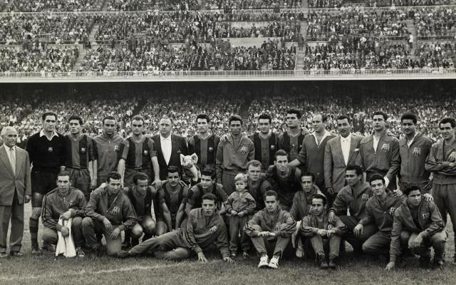
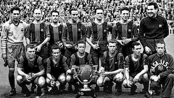
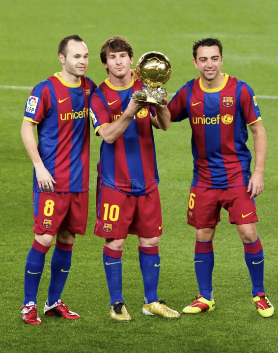

Historique du FC Barcelona
Le FC Barcelona, fondé en 1899 par un groupe de footballeurs suisses, espagnols, et britanniques, a rapidement évolué pour devenir l'un des clubs les plus emblématiques du football mondial.
Les débuts
Dans ses premières années, le club a connu des succès locaux, remportant la Copa del Rey à plusieurs reprises. L'équipe a réussi à établir une réputation de talent et d'innovation sur le terrain.
Moments marquants
- **Première victoire en Champions League**: En 1992, le FC Barcelona a remporté sa première Ligue des champions sous la direction de Johan Cruyff.
- **Le sextuplé en 2009**: Sous la direction de Pep Guardiola, le club a remporté six titres en une seule saison, un exploit jamais réalisé auparavant.
- **La rivalité avec le Real Madrid**: Les matches entre le FC Barcelona et le Real Madrid, connus sous le nom de "El Clásico", sont parmi les plus suivis dans le monde du sport.
Les légendes du club
Le FC Barcelona a vu passer des joueurs légendaires comme Lionel Messi, Xavi Hernandez, et Andrés Iniesta, qui ont non seulement apporté des trophées au club mais ont également redéfini le football moderne.
Les titres remportés
Principaux titres
- La Liga: 26 titres
- Copa del Rey: 31 titres
- UEFA Champions League: 5 titres
- Supercoupe de l'UEFA: 3 titres
- Coupe du Monde des Clubs: 3 titres
Vision actuelle
Le FC Barcelona continue de viser l'excellence, tant sur le plan national qu'international, en se concentrant sur la formation de jeunes talents et en maintenant un engagement fort envers sa communauté.